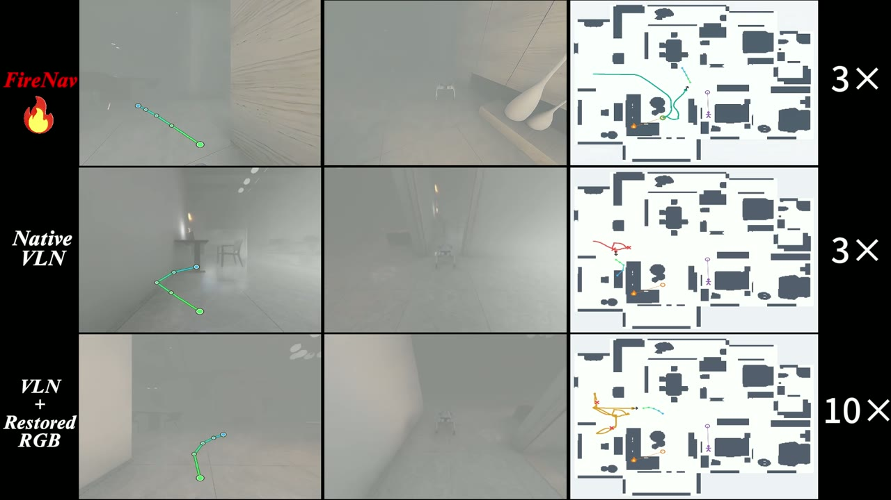
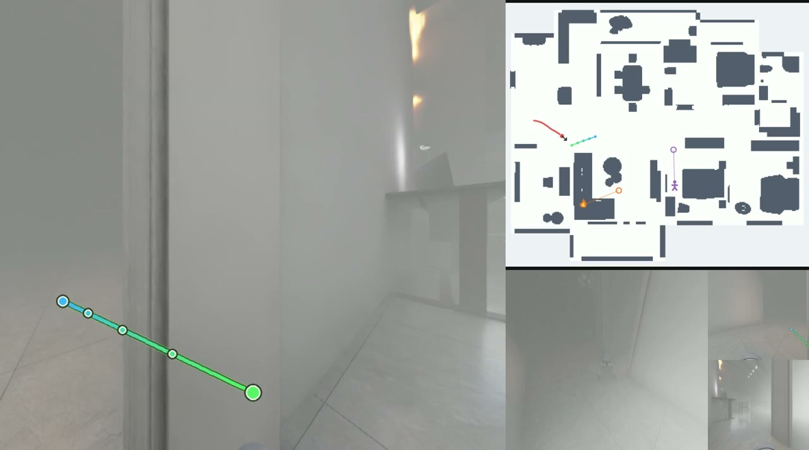
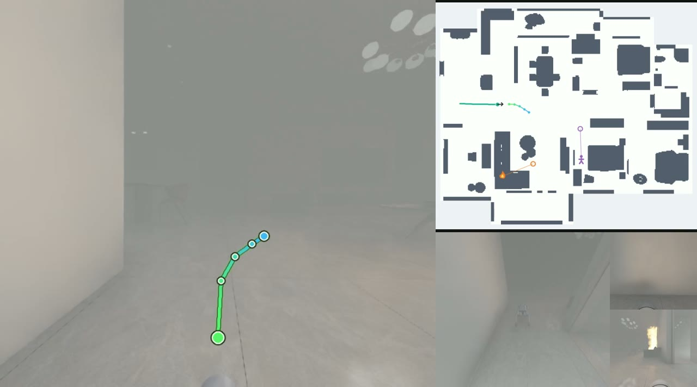
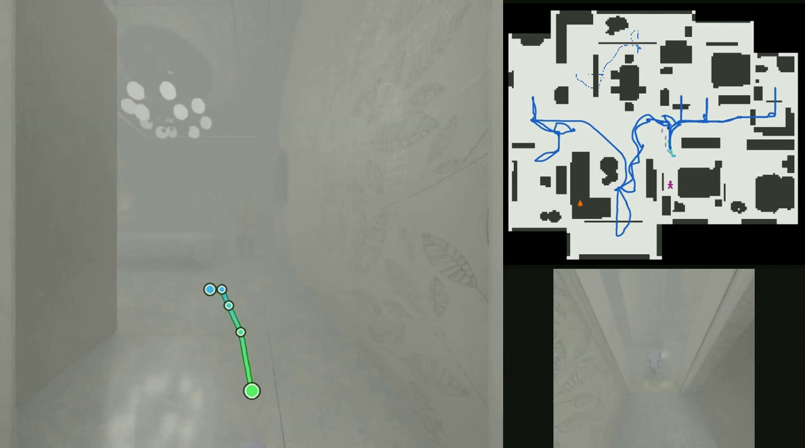
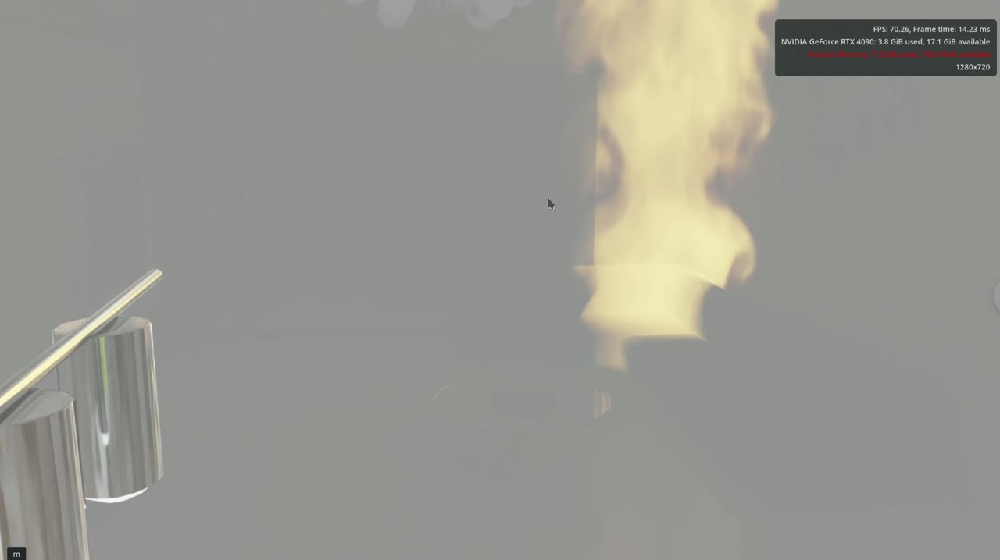
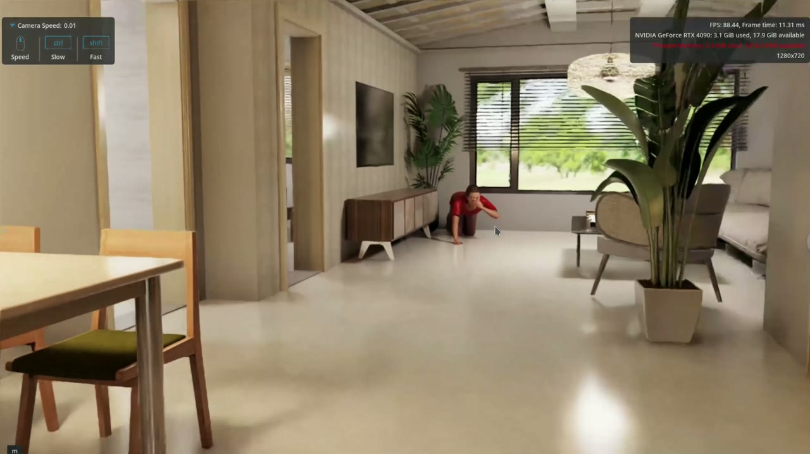

Abstract
Visual degradation in indoor fire environments can disrupt instruction grounding and navigation. FireNav preserves native visual tokens and selectively adds reconstruction features as auxiliary evidence. A lightweight router is trained with decision utility calibration, measuring whether candidate evidence improves waypoint, heading, and arrival predictions. FireVLN-Bench provides task-preserving clean/degraded pairs and matched continuous navigation (CE) and physically simulated robot execution (PE) tracks.
Navigation under Visual Degradation
Native VLN

Restored RGB
FireNav

The methods follow independent trajectories; playback time does not indicate a matched navigation state.
Long-Horizon Navigation



Method

FireVLN-Bench





Results
| Method | PE | CE | ||
|---|---|---|---|---|
| SR | SPL | SR | SPL | |
| Native VLN (clean) | 54.1 | 42.3 | 67.5 | 56.6 |
| Native VLN (degraded) | 26.8 | 17.3 | 41.8 | 29.9 |
| Raw RGB + Adapter | 35.3 | 25.2 | 49.8 | 38.6 |
| Restored RGB + Adapter | 37.3 | 27.1 | 50.8 | 39.5 |
| FireNav | 41.6 | 32.0 | 56.1 | 45.5 |